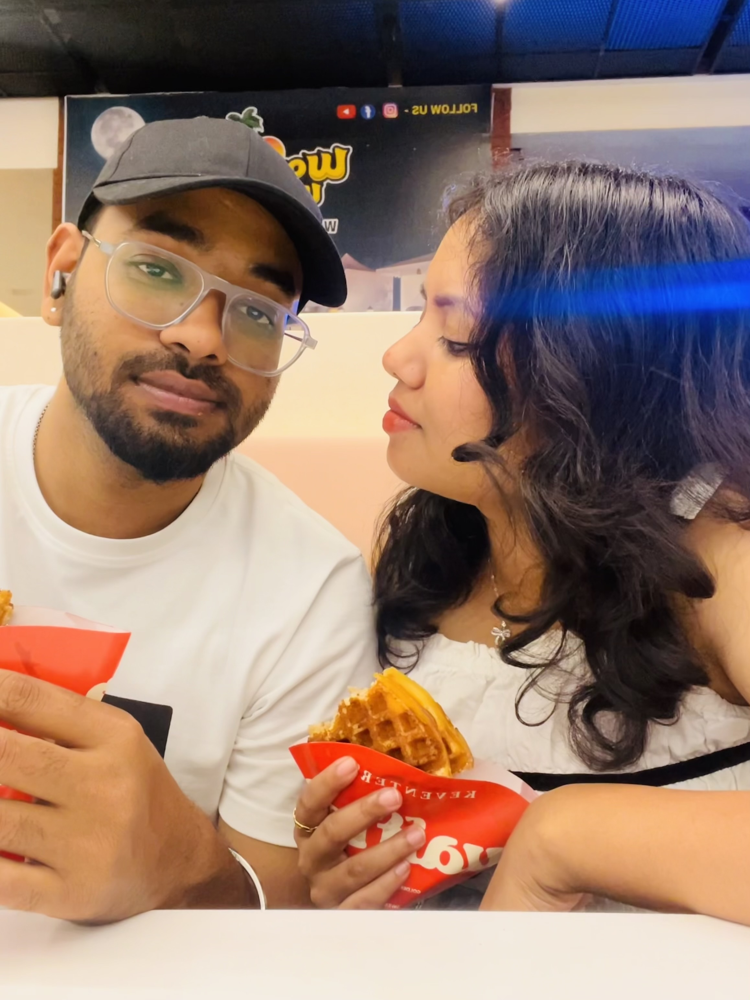
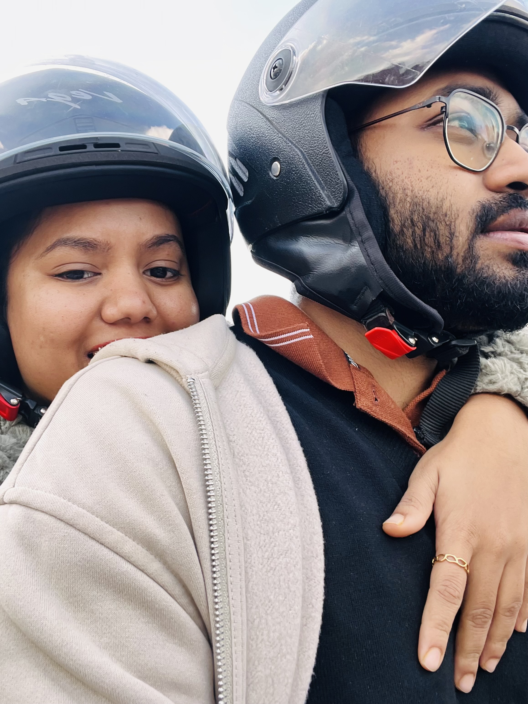
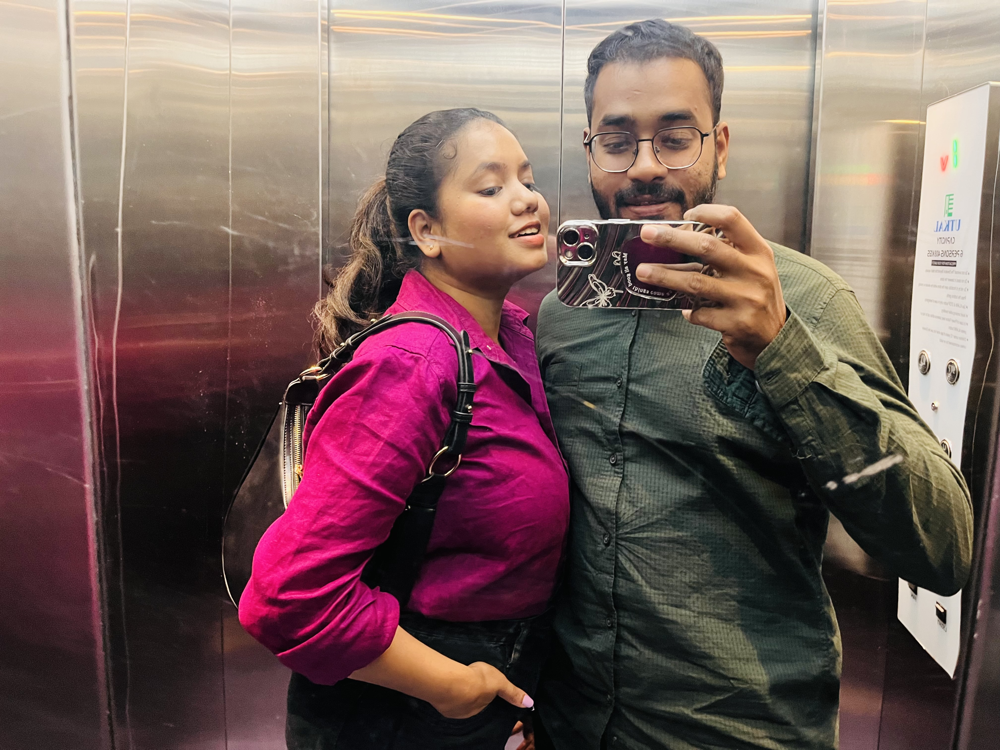
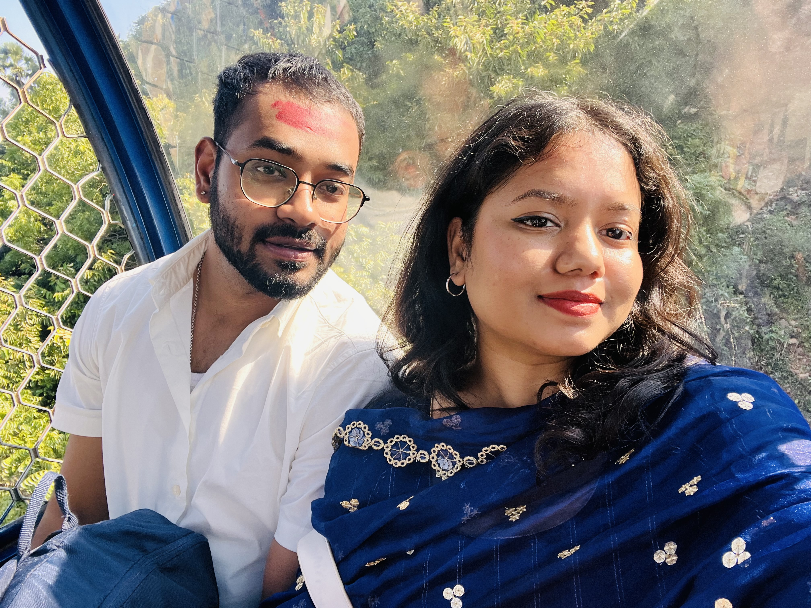

Pure joy
Our Funzone day
One of those simple, happy days that did not need anything grand to become memorable. It was just us, laughter, and the kind of joy that stays with you.
Chapter 1
These are some of the days that still feel vivid, warm, and impossible to forget, even after time keeps moving forward.

Pure joy
One of those simple, happy days that did not need anything grand to become memorable. It was just us, laughter, and the kind of joy that stays with you.

Little adventures
The destination was lovely, but the real memory was in the ride itself. Those breezy scooty moments made the whole day feel light, free, and full of us.

Favorite place
It was not just about trying something new. It was about being there with you, in a place you loved, and making it part of my own memories too.

Most remembered
Some days do not fade no matter how much time passes. This was one of them, and that is exactly why it still holds such a special place in my heart.
Unlocked whisper